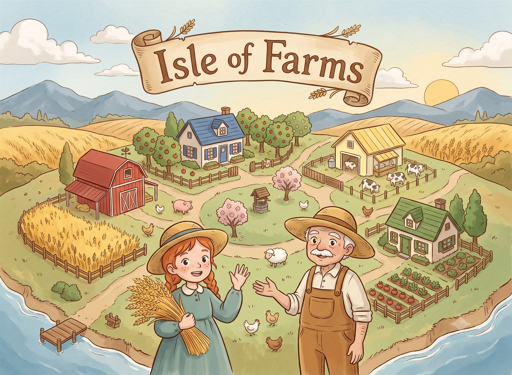

Co Designed with Juan Hernández Sánchez.
Isle of Farms: Good Neighbours is an engine builder where your rivals are the engine. Every farmer on the island grows a single crop — so the wheat farmer needs the dairy, the orchard needs the beekeeper, and everyone, sooner or later, needs you. Other games ask you to ignore your opponents' engines. This one pays you to use them.
Your own farm is only half the story. You'll plant and harvest your fields, raise new buildings, and hire hands with skills nobody else on the island can offer — then watch your neighbours queue up, coins in hand, to use them. Every coin a rival spends on your farm funds your next move. The busiest farm on the island isn't being generous. It's winning.
At the centre of the table, the island itself keeps score. Deliver your harvests up its three tiers — every delivery is public, every level worth more — and when someone crowns the peak, the game ends. There's no hidden point salad here: you can read the race from across the table, which sharpens every choice. Because every trip to a rival's farm pays them too, and the real game is deciding whose engine you're willing to feed.
Isle of Farms: Good Neighbours plays 1–4 players in 40–60 minutes, lives in a small box of 105 cards, and sits at an easy gateway-plus weight — five minutes to teach, a whole island to master.
Sign up to be notified when Isle of Farms is available for public playtesting at conventions, or when it finds a publisher.
{kind=link}
{kind=link}
{kind=link}
{kind=link}
{kind=link}
{kind=link}